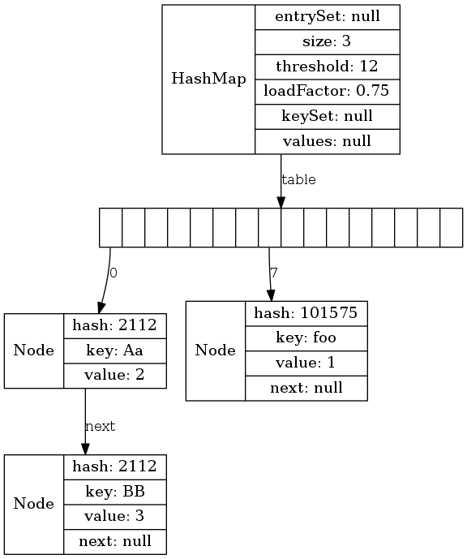
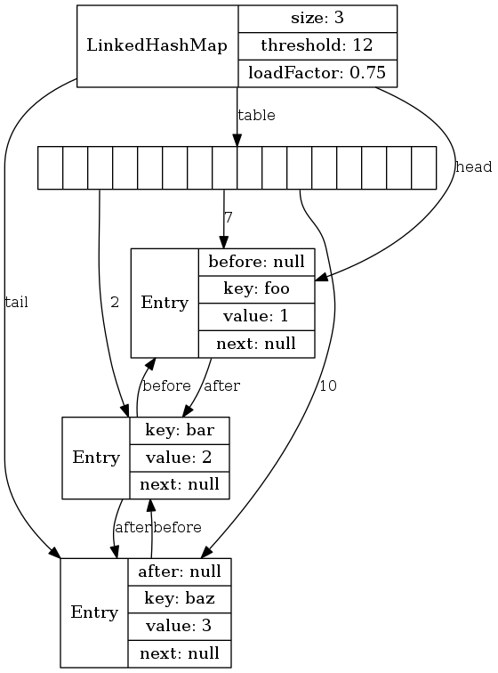
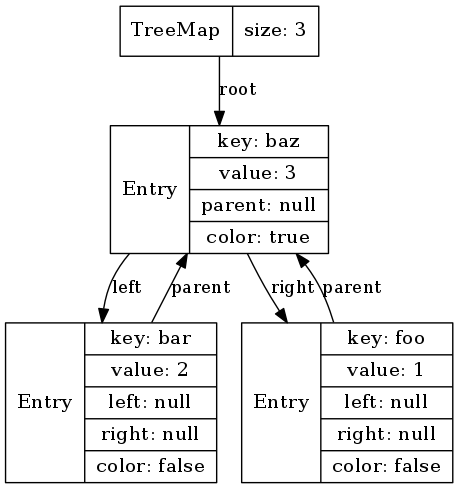

Core Java
Курс лекций. Лекция 7
@inponomarev
Коллекции: Разделение интерфейсов и реализаций
Интерфейсы коллекций: потомки Collection
Iterable: интерфейс, умеющий участвовать в for loop
| |
ListIterator: расширение для List
Интерфейсы коллекций: потомки Map
Comparable и Comparator
public interface Comparable<T>{
/**
* @param o the object to be compared.
* @return a negative integer, zero, or a positive integer as this object
* is less than, equal to, or greater than the specified object.
*/
int compareTo(T o);
}
/*Применяется в случае, если сравниваемые объекты
не реализуют Comparable*/
public interface Comparator<T> {
int compare(T o1, T o2);
}Промежуточные итоги
Используйте интерфейсы для типов переменных и аргументов в методах. Не привязывайтесь к конкретным реализациям.
Помимо возможности подмены реализаций, существуют суррогатные коллекции, например, важные частные случаи:
//Пустые //Из одного элемента
Collections.emptyList(); Collections.singletonList(o);
Collections.emptySet(); Collections.singleton(o);
Collections.emptyMap(); Collections.singletonMap(k,v);
...Суррогатные коллекции: защита (частичная) при публикации объекта
Collections.unmodifiableList(List<? extends T> l);
Collections.unmodifiableSet(Set<? extends T> s);
Collections.unmodifiableMap(Map<? extends K,
? extends V> s);
...В классе Collections (как и в классе Arrays) вообще очень много всего полезного!
Его Величество ArrayList
List<String> list = new ArrayList<>();
list.add("foo"); list.add("bar"); list.add("baz");(Визуализация внутреннего устройства структур данных сделана с помощью Lightweight Java Visualizer.)
Свойства ArrayList
get(int index)is O(1) ← main benefit ofArrayList<E>add(E element)is O(1) amortized, but O(n) worst-case since the array must be resized and copiedadd(int index, E element)is O(n) (with n/2 steps on average)remove(int index)is O(n) (with n/2 steps on average)Iterator.remove()is O(n) (with n/2 steps on average)ListIterator.add(E element)is O(n) (with n/2 steps on average)
LinkedList
List<String> list = new LinkedList<>();
list.add("foo"); list.add("bar"); list.add("baz");Свойства LinkedList
Implements
ListandDequeget(int index)is O(n) (with n/4 steps on average)add(E element)is O(1)add(int index, E element)is O(n) (with n/4 steps on average), but O(1) whenindex = 0← main benefit ofLinkedList<E>remove(int index)is O(n) (with n/4 steps on average)Iterator.remove()is O(1) ← main benefit ofLinkedList<E>ListIterator.add(E element)is O(1) This is one of the main benefits ofLinkedList<E>
А если всё-таки нужен Deque?
ArrayDequeCircular array
Более быстрый, чем
LinkedList.
PriorityQueue
Постановка в очередь с сортировкой по приоритету за счёт
ComparableилиComparator.Balanced binary heap: "the two children of
queue[n]arequeue[2*n+1]and `queue[2*(n+1)]`"
PriorityQueue<String> q = new PriorityQueue<>();
q.add("foo"); q.add("bar"); q.add("baz");
Выводы
Теоретическая асимптотика не полностью описывает пригодность той или иной структуры данных: вмешивается ряд обстоятельств, таких как
частные "удачные" случаи и частота их использования,
эффективность использования кэша,
количество производимого "мусора"
и т. п.
ArrayListиArrayDequeявляются предпочтительным выбором реализацииListиDequeв подавляющем большинстве случаев.
Его Величество HashMap
Map<String, Integer> map = new HashMap<>();
map.put("foo", 1); map.put("bar", 2); map.put("baz", 3);Коллизии хэша
 |
|
LinkedHashMap
 |
|
Ещё вариации на тему хэш-таблицы
IdentityHashMap— ключи сравниваются по==, а не поequals().WeakHashMap— значения могут быть собраны сборщиком мусора, если не используются где-то ещё.
TreeMap
 |
|
Множества (Sets)
Коллекции, в которых объект может присутствовать только один раз.
Реализованы на базе соответствующих Maps:
HashSet,LinkedHashSet,TreeSet.
private transient HashMap<E,Object> map;
// Dummy value to associate with an Object in the backing Map
private static final Object PRESENT = new Object();
public boolean add(E e) {
return map.put(e, PRESENT)==null;
}Множества на основе битовых масок
EnumSet— на базе единственного значения типаlong. Используйте только его для enum-ов!BitSet— массив long-ов.
Алгоритмы: сортировка и перемешивание
| |
Алгоритмы: бинарный поиск
| |
Также уже реализованы
поиск min/max
копирование
разворачивание "задом наперёд"
объединение и разность
… — ищите и найдёте!
Callbacks: До появления лямбд
public interface ActionListener {
void actionPerformed(ActionEvent event);
}
// ----использование----
String text = ...
new Timer(1000, new ActionListener(){
@Override
public void actionPerformed(ActionEvent e) {
... //'text' var is available here
}
});Callbacks: Comparator
String[] friends = {"Peter", "Paul", "Mary"};
Arrays.sort(friends,
new Comparator<String>() {
@Override
public int compare(String o1, String o2) {
return o1.length() - o2.length();
}
});Предикат
File[] hiddenFiles = new File(".").listFiles(
new FileFilter() {
public boolean accept(File file) {
return file.isHidden();
}
}
);Welcome lambda expressions!
//single-line
(String first, String second) ->
first.length() - second.length()
//multi-line with int return
(String first, String second) -> {
if (first.length() < second.length()) return -1;
else if (first.length() > second.length()) return 1;
else return 0;
}
//no-arg, void return
() -> System.out.println("Hello!");Что из этого — валидные лямбда-выражения?
() → {}() → "Raoul"() → {return "Mario";}(Integer i) → return "Alan" + i(String s) → {"Iron Man"}
Ответ: 1-3. Если лямбда с фигурными скобками, обязательно нужен return. Если без них, то return не нужен!
Чему можно присваивать лямбды?
Функциональный интерфейс — такой, у которого не более одного абстрактного метода (понятно, что запускать).
Может быть помечен аннотацией
@FunctionalInterface, хотя это не обязательно.Если метод интерфейса подходит по параметрам и возвращаемому значению лямбды — welcome.
//Типы аргументов лямбд указывать не надо: type inference!
ActionListener = e -> {...}
Comparator<String> c = (s1, s2) -> s1.length() - s2.length();Void-compatibility
Оба варианта скомпилируются:
final List<String> list = ...
//Predicate.test возвращает boolean
Predicate<String> p = s -> list.add(s);
//Consumer.accept возвращает void!
Consumer<String> c = s -> list.add(s);Object — не функциональный интерфейс!
//не скомпилируется
Object o = ()->{};
//Скомпилируется!
Runnable r = ()->{};
//Тоже скомпилируется
Object o = (Runnable) ()->{};В итоге имеем
Anonymous Class | Lambda |
| |
| |
Замыкания (closures)
void repeatMessage(String text, int delay) {
ActionListener listener = event -> {
//переменная text доступна внутри лямбды!
System.out.println(text);
}
new Timer(delay, listener).start();
}"Ингридиенты" лямбды:
Код
Параметры
Свободные ("захваченные") переменные, которые должны быть effectively final
* на самом деле, effectively final
Effectively final only
int start = ...
for (int i = 0; i < count; i++) {
ActionListener linstener = event -> {
start--; //ERROR: Can't mutate captured value
//ERROR: Cannot refer to changing i
System.out.println(i);
}
}(Effectively final переменные — это такие, что они либо уже final, либо, если на них проставить final, код всё равно будет компилироваться)
Method references: ещё короче, ещё эффективнее
| |
| |
| |
Три способа определить Method reference
|
|
|
|
|
|
Constructor/Array Constructor Reference
|
|
|
|
IDE поможет, но разница есть!
obj = null;
//NPE только в момент запуска лямбды!!
//obj должен быть effectively final!
doSmth(x -> obj.method(x));
//NPE здесь и сейчас
//obj не обязан быть effectively final
doSmth(obj::method)Методы, специально созданные, чтобы быть method references
//Да ладно, разве трудно на null проверить??
Objects.isNull(Object obj)...
Objects.nonNull(Object ob)...
list.removeIf(Objects::isNull);
stream.filter(Objects::nonNull)...Готовые функциональные типы
| Functional Interface | Parameter Types | Return Type | Abstract Method Name | Default Methods |
|---|---|---|---|---|
Runnable | none | void | run | |
Supplier<T> | none | T | get | |
Consumer<T> | T | void | accept | andThen |
BiConsumer<T, U> | T, U | void | accept | andThen |
Комбинирование консьюмеров
Consumer<String> foo = ...
List<String> list = ...
//Составной консьюмер, отправляющий
//объект сначала в первый, потом во второй
Consumer<String> bar = foo.andThen(list::add);Функции
| Functional Interface | Parameter Types | Return Type | Abstract Method Name | Default Methods |
|---|---|---|---|---|
Function<T, R> | T | R | apply | compose, andThen, identity |
BiFunction<T, U, R> | T, U | R | apply | andThen |
Композиция функций и identity
|
|
|
|
|
|
Почему у BiFunction нет compose, только andThen?
Операторы
| Functional Interface | Parameter Types | Return Type | Abstract Method Name | Default Methods |
|---|---|---|---|---|
UnaryOperator<T> | T | T | apply | compose, andThen, identity |
BinaryOperator<T> | T, T | T | apply | andThen, maxBy, minBy |
Композиция операторов
UnaryOperator<T> extends Function<T,T>, поэтомуcompose,andThenиidentityработают так же.BinaryOperator<T> extends BiFunction<T,T,T>, поэтомуandThenработает так жеСтатические методы
minByиmaxByформируют операторыmin(x,y)иmax(x,y)из компаратора.
Предикаты
| Functional Interface | Parameter Types | Return Type | Abstract Method Name | Default Methods |
|---|---|---|---|---|
Predicate<T> | T | boolean | test | and, or, negate, isEqual |
BiPredicate<T, U> | T, U | boolean | test | and, or, negate |
Композиция предикатов
Predicate<T> a = ...
Predicate<T> b = ...
a.and(b).negate(); // ! (a(x) & b(x)
//Двуместный предикат (x,y)-> Objects.equas(x, y)
Objects::equals
//Одноместный предикат y -> Objects.equals(x, y)
Predicate.isEqual(x)Функциональные интерфейсы для примитивных типов
p, q is int, long, double; P, Q is Int, Long, Double
| Functional Interface | Parameter Types | Return Type | Abstract Method Name |
|---|---|---|---|
BooleanSupplier | none | boolean | getAsBoolean |
PSupplier | none | p | getAsP |
PConsumer | p | void | accept |
ObjPConsumer<T> | T, p | void | accept |
PFunction<T> | p | T | apply |
PToQFunction | p | q | applyAsQ |
ToPFunction<T> | T | p | applyAsP |
ToPBiFunction<T, U> | T, U | p | applyAsP |
Функциональные интерфейсы для примитивных типов (продолжение)
| Functional Interface | Parameter Types | Return Type | Abstract Method Name |
|---|---|---|---|
PUnaryOperator | p | p | applyAsP |
PBinaryOperator | p, p | p | applyAsP |
PPredicate | p | boolean | test |
Дефолтные методы Map interface
Работают атомарно в ConcurrentHashMap!
V computeIfAbsent(K key,
Function<? super K, ? extends V> mappingFunction)
V computeIfPresent(K key,
BiFunction<? super K, ? super V, ? extends V> remappingFunction)
V compute(K key,
BiFunction<? super K, ? super V, ? extends V> remappingFunction)
V merge(K key, V value,
BiFunction<? super V, ? super V, ? extends V> remappingFunction)Компараторы
@AllArgsConstructor
public class Person {
@Getter
private final String firstName;
@Getter
private final String lastName;
}
List<Person> people = new ArrayList<>();Сортируем по фамилии
| |
Сортируем по фамилии, потом по имени
//НЕ ПИШИТЕ ВЕСЬ ЭТОТ КОШМАР
Collections.sort(people,
(p1, p2) -> {
int result = p1.getFirstName().compareTo(p2.getFirstName());
if (result == 0) {
result = p2.getLastName().compareTo(p2.getLastName());
}
return result;
}
);Правильно так:
Collections.sort(people,
Comparator
.comparing(Person::getLastName)
.thenComparing(Person::getFirstName));
);Также:
Comparator.comparing(keyExtractor, keyComparator)
Comparator.comparingInt/Double(...)
Comparator.reversed()
Comparator.nullsFirst/nullsLast(Comparator c)